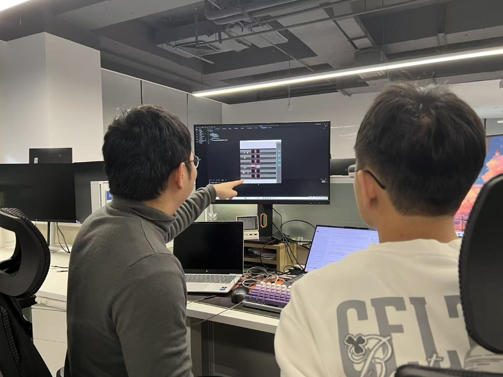

本次课程作业链接： 电梯调度链接
既然是合作，我们进行了分工。我负责的部分是GUI部分。
预估PSP表 #
| PSP阶段 | 预计时间 |
|---|---|
| 需求分析与GUI架构设计 | 30min |
| GUI素材绘制 | 1h |
| PyGame库学习 | 1h |
| GUI框架实现 | 2h |
| GUI进程与算法进程通信框架实现 | 2h |
接口设计 #
我们在设计时将算法与GUI分别作为两个独立的进程进行开发。算法进程正常与模拟器进行交互，只需要在每一个tick结束时，将这个tick发生的事件按照约定的方式，构建成事件队列，然后将事件队列通过进程间通信方式Queue，放入到队列中。而GUI进程，在收到算法进程发来的Queue之后，将Queue中的事件队列取出，然后将每个事件转换成一个对应的渲染任务。在这个过程中，算法进程与GUI进程完全互不干扰，算法看不到GUI的内部信息，而GUI也看不到算法进程的内部信息。两者之间仅仅只依赖约定的事件类型进行和进程间通信队列进行沟通。
重要接口实现 #
GUI部部分的重要接口主要就是与算法进程进行通信的部分了。
由于涉及到进程间的同步，我使用了Event和Queue两种同步手段。Event用来同步算法的tick和模拟器的帧数。模拟器每前进一个tick就会通过Event通知GUI。然后GUI渲染60帧后，再次通过Event通知算法进程可以继续前进。这样就实现了算法与GUI行为的同步。
关于如何将算法进程的事件传递给GUI进程。我使用了Queue作为通信手段。在算法的每一个tick结束时，算法进程将本tick内发生的事件全部转换为约定好的GUI事件，发送到Queue当中。然后通知GUI进程。收到通知的GUI进程可以从Queue中取出GUI事件队列，然后对事件进行渲染。
通过这样的通信方式，我们的算法进程与GUI进程实现了松耦合的设计。因此我们两个人可以各自实现自己负责的部分，完全不会发生冲突。
重构代码 #
实际上GUI部分的需求并没有太多变化。能称得上需求变化的地方只有一处。最开始我误以为整个楼层的高度最高为6层，因此，所有GUI素材都是按照6层的比例进行绘制的，然后将6层这个参数作为硬编码写入了代码当中。然后在第一次答疑课当中，我得知了楼层最高为20层，因此我不得不修改代码，将楼层参数作为GUI的初始化参数传入其中。由于整体GUI框架是比较优秀的，因此只需要在初始化load素材sprite时，将sprite素材根据楼层高度进行适当的缩放即可，不需要修改太多内容。
我们github仓库的总提交条数为30条，两个人都是直接提交到main分支中。这是因为我们两个人负责的部分是完全独立的，提交的内容互不影响，因此需要上传自己负责的部分即可合并。
程序代码规范 #
实际上我们并没有约定明确的代码规范，我们两个人各自负责各自的部分，采用自己的编码风格。
界面设计 #
界面设计完全是由我负责的。由于我对游戏引擎比较熟悉，因此在制作GUI界面时我选择了pygame来搭建GUI。作为一个游戏引擎，它的逻辑就是不停地进行循环，每一帧更新屏幕上的画面。我将电梯的行动，乘客上下电梯等行为全部建模成事件。然后通过进程间通信的方式，让算法进程将事件队列发送到GUI进程中。然后GUI进程将这些事件转换成渲染动画。接口部分主要依赖于多进程库中的两个Event和一个Queue。
至于MVC设计模式，我认为似乎并不存在控制模块，只有view和model模块。view模块直接接收model传来的内容。
结对编程 #
结对编程对我来说其实是一种很新颖的编程模式。过去我习惯了单打独斗的编程方式，现在的我既需要被搭档审查，也要去审查搭档。我在开始时，会先把自己的思路提前说好，然后开始进行工作。这样搭档就需要先审查我的思路，然后再确定我是否能够正确地实现自己的思路。但是这样做的前提是我的搭档需要先在心里想好，如果他按照这个思路来实现，他会怎么做。否则很容易跟着我的思路一起陷入错误当中。我认为完全可以在编程时让AI作为自己的搭档。首先告诉AI自己的思路是什么，然后让AI实时审查自己的代码是否正确。因为AI不会跟着自己的思路一起陷入错误中，所以它会是一个很不错的结对编程搭档。

合作方式 #
结对编程优缺点 #
由于是两个人共同进行开发，因此一个人陷入思维误区之后，另一个人可以很快指出他的错误。此外，两个人的思维互补，知识共享，在开发过程中总是可以实现更优的设计。
但是结对编程并没有实现1+1=2的效果。甚至最后体现出来的结果是小于1的。因为两个人如果发生争执，反而会导致原本的开发时间被用作讨论与争辩的时间，降低了工作效率。
伙伴评价 #
我的搭档是一个非常有耐心，细致的人，他在debug时非常细心。并且他的情绪相当稳定，交流起来效率非常高。同时，他的思维很活跃，总是会提出一些非常好的想法进行实现。
他的缺点主要是主观能动性有些不足。
实际PSP表 #
| PSP阶段 | 预计时间 | 实际事件 |
|---|---|---|
| 需求分析与GUI架构设计 | 30min | 30min |
| GUI素材绘制 | 1h | 1h |
| PyGame库学习 | 1h | 30min |
| GUI框架实现 | 2h | 4h |
| GUI进程与算法进程通信框架实现 | 2h | 2h |
我对GUI框架的设计是清晰且明确的。因此原计划在2个小时内完成开发工作。然而实际上，我碰到了许多意想不到的问题。比如，电梯是从0开始编号的，而乘客却是从1开始编号；电梯到达和乘客离开在同一个tick发生，而电梯到达和乘客登上电梯却不在同一个tick，这让我原本设计的渲染逻辑很难处理。诸如此类的小问题是我在最初设计框架时完全没有注意到的，因此在开发过程中需要经常处理这些特殊情况。
课程收获 #
实际上我觉得这次的作业完成起来很轻松，没有遇到什么特别困难的问题，整个流程走下来非常顺利。如果放在本科时代做这个工作大概会做的很痛苦吧，但是现在做感觉就像是在做一个玩具一样。一开始说要做图形化界面的时候我想到的是用pyQt来完成。我在之前的课程中有接触过这个库，但是我觉得这个库不好用，我也并不熟悉。说到图形化界面，渲染动画，我接触的比较多的就是游戏引擎。因此我选择了pygame库来开发GUI界面。虽然pygame我也并不熟悉，但是开发游戏的过程基本都是相通的，所以pygame上手也很快。
之前的开发过程主要目的是完成任务。而这一次的开发我必须要同时考虑到搭档，考虑到用户的使用。因此之前那种粗犷的开发方式就完全不能使用。这一次我在开发过程中，为了让搭档审查我代码时理解我的意图，在代码中加入了详尽的注释，这对我自己复审代码也提供了巨大的帮助。同时，为了便于搭档使用，很多功能我必须考虑到它的实用性，以往能跑就行的风格也被我摒弃了。最后，以往的代码开发过程中很少做版本管理，而在这一次，我们充分利用了github仓库，好好进行了版本管理。我感觉我在通往专业开发的路上又前进了一步。